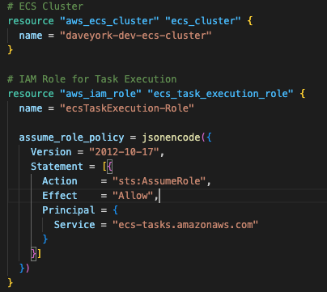
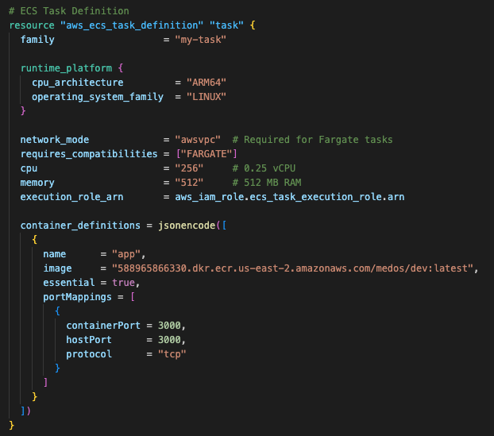

Now that we have the barebones of our application, we can start to build out the infrastructure that will support it. We will use Terraform to define our infrastructure as code. This will allow us to version control our infrastructure and easily deploy it to multiple environments.
We're using Amazon's ECS to host our Node.js container, so we'll first need to define the ECS cluster name, and define an IAM role for ECS to assume. The IAM role allows ECS to perform operations on our behalf like pulling our container image from ECR or publishing logs to cloudwatch.
name: The name of the IAM role (ecsTaskExecution-Role).assume_role_policy: Defines who or what can assume this role. Here, it’s ecs-tasks.amazonaws.com, which means ECS tasks can use this role.Next, we'll define the ECS task definition. This is where we define the container image we want to run, the resources it needs, and the environment variables it requires. We'll also define the ECS service, which is responsible for running and maintaining a specified number of tasks.
family: A name or identifier for your task definition (my-task).runtime_platform: Specifies CPU architecture (ARM64) and operating system family (LINUX).network_mode = "awsvpc": Required for Fargate tasks, giving each task its own elastic network interface.requires_compatibilities = ["FARGATE"]: Informs ECS that this task definition is for Fargate.cpu / memory: Allocated resources for the task: 256 CPU units (0.25 vCPU) and 512 MB of memory.execution_role_arn: References the role that ECS tasks will assume (ecs_task_execution_role).container_definitions: JSON-encoded configuration for your container(s). This includes:
true, stopping this container stops the task.